Install
- Download the latest Farol.dmg.
- Open it and drag Farol to Applications.
- Open Farol from Applications or Spotlight.
Or with Homebrew:
brew install --cask snowztech/tap/farolFarol needs Apple Silicon and macOS 14 or later. Releases are signed and notarized.
When a new version is out, an Update button shows in the title bar. Click it and Farol installs the update and relaunches, with your sessions and agents back. brew upgrade --cask farol works too.
Connect agents
Open Settings → Agents to connect an agent. Farol keeps each tool's existing settings and makes a backup before adding hooks.
Claude Code
Click Connect. Farol adds status hooks to ~/.claude/settings.json. Disconnect removes only Farol's hooks.
Codex
Interactive sessions report their status through terminal titles automatically. Keep terminal titles enabled in Codex. Click Connect to cover non-interactive runs and background agents too, then restart open sessions and review the hooks with /hooks.
Codex hooks require version 0.159.2 or later.
More than one account
Farol finds agent folders such as ~/.claude-* and ~/.codex-*. Connect each account in Settings, then choose the one you want when starting a task.
Other agents
Every Farol session exposes $FAROL_CLI. An agent can report its state with:
"$FAROL_CLI" status working
"$FAROL_CLI" status waiting
"$FAROL_CLI" status done
"$FAROL_CLI" status clearAn agent that rings the terminal bell also shows as waiting without setup.
Tasks and worktrees
Press ⇧⌘N to start a task. Describe the work, choose an agent and account, then pick a branch name. Farol creates a git worktree and sends the task as the agent's first prompt.
You can start from one of your open Jira tickets or the repository's GitHub issues. Farol names the branch from the ticket and gives the agent its full description.
Press ⇧⌘T when you want a worktree session without starting an agent. Closing a worktree session offers to remove the checkout and always keeps its branch.
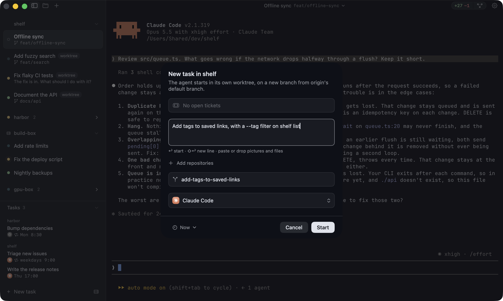
Tasks for later
The button beside Start picks when a task runs: now, once on a day you pick, or again on the days of the week you choose. Each run gets its own worktree, and a repeat's branch ends with the day, like triage-2026-11-09. Tasks wait in the Tasks pane under the sessions, which shows when each one runs next.
Click a task to change it and see how its runs went. Run Now is on hover, and Pause and Delete are on right-click. Farol opens at a task's time even if you quit it, and a run missed while the Mac slept starts once it wakes.
Each task is a Markdown file in ~/.farol/schedules/ that you or an agent can write. A file Farol didn't write waits in the Tasks pane until you click Allow.
Run project commands
Press ⌘P to find commands from the project's Makefile, package.json or justfile. Return runs a command in the current pane, or in a new pane below when an agent is working there. You can also add and manage commands from the pane's Run menu.
Save a script in .farol/commands/ to share it with a project, or in ~/.farol/commands/ to use it everywhere. Commit project commands to Git and they appear in new worktrees automatically. Farol does not copy untracked commands from another checkout.
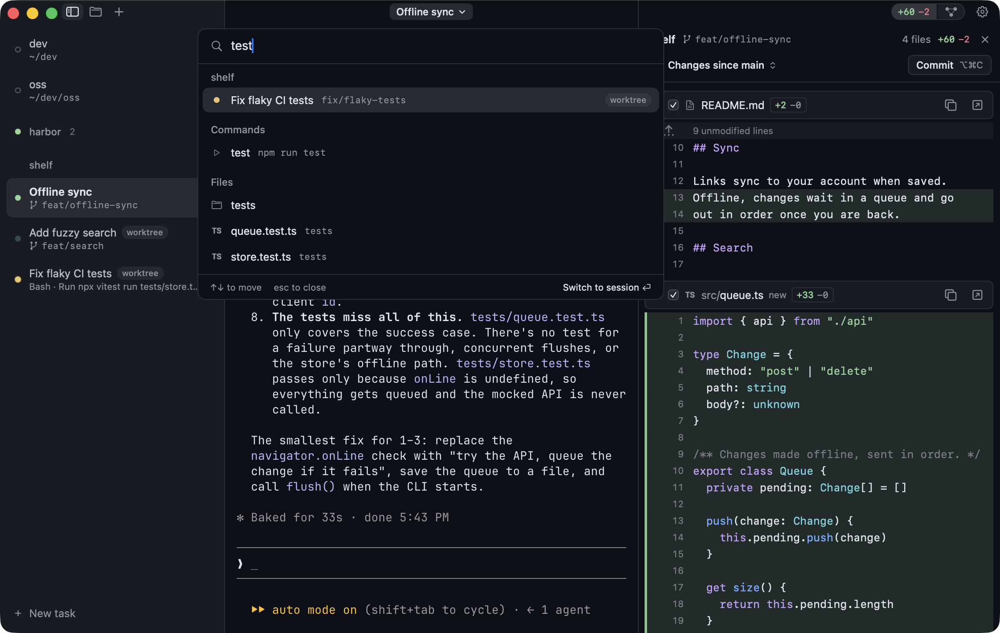
Prepare each worktree
Commit an executable script named exactly .farol/setup to your repo, with no extension. Its first line chooses the interpreter, such as #!/bin/sh or #!/usr/bin/env python3. Farol runs it in the new worktree's terminal before starting the agent or chosen command. If Settings → Worktrees → Copy local environment files is on, ignored .env files are copied first. Agents in that worktree can read their values. For a task across repos, each repo's setup runs before the agent starts.
.farol/setup for a Node project#!/bin/sh
set -e
npm ciSetup can also copy files that aren't in Git, like local config, from the main checkout:
#!/bin/sh
set -e
main="$(git rev-parse --path-format=absolute --git-common-dir)/.."
mkdir -p .claude
cp "$main/.claude/settings.local.json" .claude/ 2>/dev/null || trueRun chmod +x .farol/setup before committing it. The script must exit when setup is ready. If it fails, Farol keeps the worktree and terminal open without starting the agent. Fix the script, then press Up and Return in that terminal to retry.
You can also commit an executable .farol/teardown to stop services when you choose to remove a worktree. Farol keeps the worktree if teardown fails. Keep both scripts safe to run again after a partial failure.
Agent status
The dot beside a session tells you what needs attention. Its colors come from the active terminal theme.
| State | Meaning |
|---|---|
| Idle | No active agent state. |
| Working | The agent is processing a prompt or using tools. |
| Waiting | The agent needs approval or an answer. |
| Done | The turn finished while you were elsewhere. |
Use ⌘P to search and switch sessions. Settings can also group sessions under each project's name.
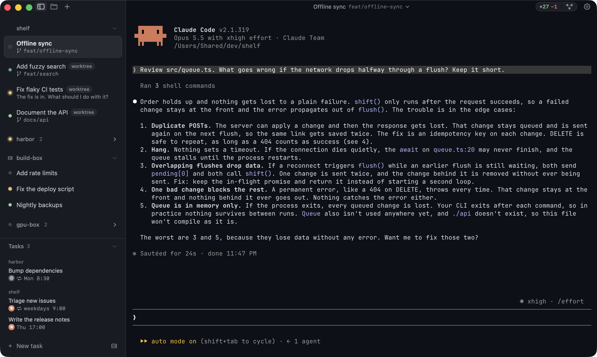
Review and ship
The title bar shows the current branch's changed lines. Click the count or press ⌥⌘R to review every changed file as one scrolling diff.
- Files: Press ⇧⌘E to open a file beside the terminal and fix it by hand. See Files and editor.
- Review: Compare uncommitted work or everything since the branch left main or another branch.
- Notes for the agent: Click the + beside a line of your own changes, or select lines and right-click, to leave a note. Send them all to the session's agent in one message, or one at once with ⇧⌘↩. Each note quotes its lines, so it follows them as the agent edits.
- Git graph: Press ⌥⌘G to inspect branches and commits, then check out, create, rebase, delete, cherry-pick or revert.
- Ship: Commit, push and open a pull request on GitHub or GitLab from the review panel. Untick a file in the panel or in the commit sheet to leave it out of the commit.
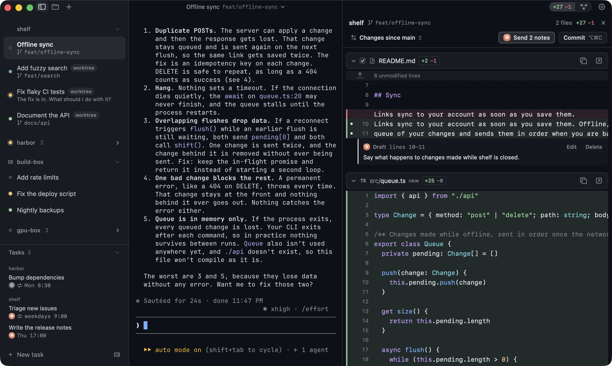
Resolve conflicts
When a merge, rebase, cherry-pick or revert stops on conflicts, the title bar and the session's row show how many, even when an agent started it in the background. Press ⌥⌘M to see the files in three columns: your version, the result and the incoming one.
- Decide each change: the arrow takes a change into the result and the cross leaves it out. A conflict is resolved once both sides are decided. The ↓ and ↑ buttons, or ⌥↓ and ⌥↑, go to the next and previous change to decide.
- Only the differences: changes only one side made are taken from the start and shown dashed, and only unchanged lines fold. Click a fold to open it.
- Like last time: when git's rerere is on and has seen a conflict before, the file shows as already resolved. Use It keeps that resolution and Decide Again opens both sides. During a rebase, a row above the files shows each commit, replayed or still to come.
- Edited elsewhere: if the file changed on disk after git stopped, a bar offers Use the File on Disk once no markers are left, or Start From Git's Versions. Ignore Whitespace, in the ⋯ menu, settles conflicts that only differ in spacing.
- Edit by hand: the result is a normal editor, and ⌘Z undoes both typing and decisions.
- Whole files: ⌃⌘← fills the result with your side and ⌃⌘→ with the incoming one, which you can still edit or undo before Mark Resolved. For a file deleted on one side, that means keeping or deleting it, and each option shows the file it leaves before you apply it.
- Finish: ⌘S marks the file resolved, and Reopen puts it back in conflict until you continue. Once every file is, run the tests or ask the agent to check, then continue, skip or abort. Continuing a merge, cherry-pick or revert asks for the commit message, starting from the one git prepared. A rebase keeps each commit's message unless you choose Edit Message. Esc goes back to the terminal.
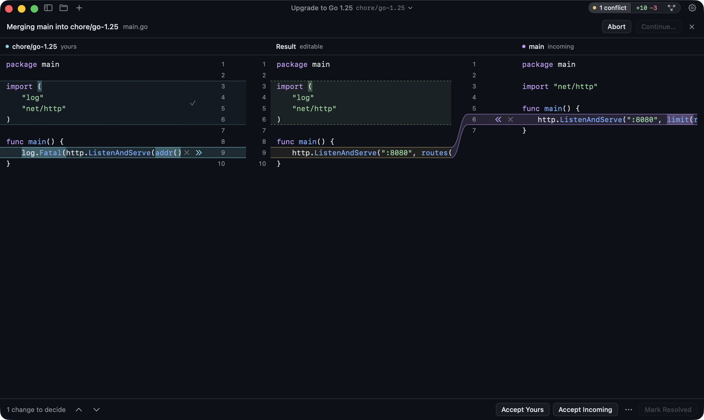
Files and editor
A light editor for reading what the agent wrote and fixing it by hand, beside the terminal, without leaving the session.
- Files: Press ⇧⌘E to browse the project as a tree, and click a file to open it.
- Tabs: A file you click opens in a tab that the next one replaces. Edit it or double-click its tab to keep it. ⌃Tab moves between tabs and ⌘W closes one.
- Edit: Syntax colors for the common languages, ⌘L to go to a line, and ⌘S to save.
- Find in Files: Press ⇧⌘F to search the whole project, then click a match to open it on its line.
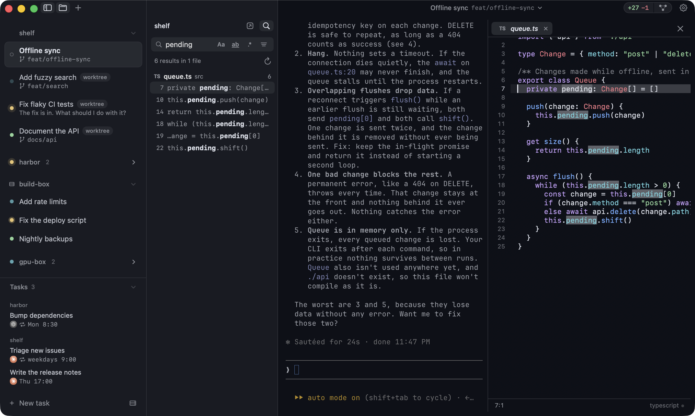
Language servers
With a language's server on, ⌘-click a name to go to its definition, or on a definition to list its references. ⌃⌘← and ⌃⌘→, or the mouse's side buttons, move back and forward between the places you jumped to.
Turn servers on in Settings → Editor. Farol finds a server you already have, or installs it with one click. Only the ones you turn on run, one per checkout.
- Go:
gopls - TypeScript and JavaScript:
typescript-language-server, and Vue through its plugin - Python:
pyright - Rust:
rust-analyzer - Swift:
sourcekit-lsp - C, C++ and Objective-C:
clangd
From any app
In Settings → Agents → Outside Farol, turn on the menu bar lighthouse or the small status panel. The panel can sit at the notch or on a screen edge, and you can drag it along that edge.
Both show which sessions are working, waiting or done. Open a session directly from either one. When an agent waits or finishes in the background, Farol sends a notification and counts waiting sessions on the Dock icon.
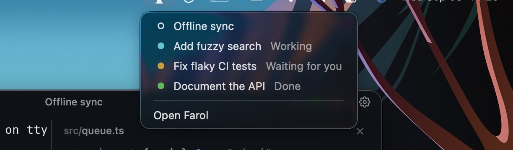
From your phone
Remote lets you answer your agents when you are away from the Mac. Install Farol Remote from the App Store, or try new features early on TestFlight. Then turn Remote on in Settings → Remote, press Show code and scan it from the app. The Remote page has an overview.
The phone lists your sessions with their status and opens each as its agent's conversation, with the terminal one tap away. Approve or answer an agent with a tap, reply with a slash command or a picture, open a new session, and look over what changed. It notifies you when an agent waits or finishes, and a Live Activity keeps count while the app is closed. Everything between the Mac and the phone is encrypted end to end, so the relay that joins them cannot read it.
The agents run on the Mac, so it has to stay on. Keep the Mac awake for agents stops it from sleeping by itself while an agent works or waits for you. It is on unless you turn it off. Using Farol from your phone counts as using the Mac, so it sleeps after its usual time once you put the phone away.
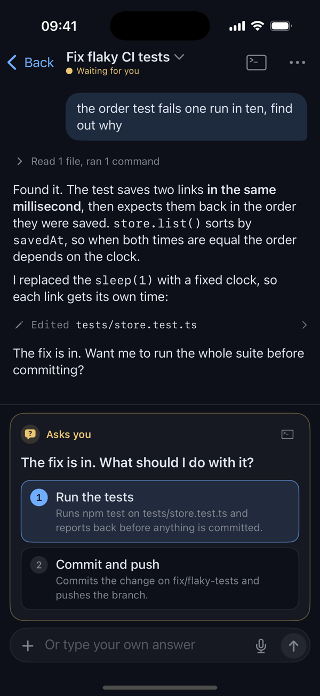
To keep agents going with the Mac closed, run them on a server. See Servers.
Servers
Run agents on a machine that stays on, in tmux, and follow them from your Mac and your phone. farol-host reports their status from there. It is still experimental: here is what is left.
Add one from your Mac
- Click the server button beside New task, or open Settings → Remote → Add Server.
- Pick a host from
~/.ssh/config, or typeuser@host. - Farol installs or updates
farol-hostthere, in a terminal you can see. If ssh asks for a password or sudo, answer it there.
There is no code to scan: ssh already proves it is you.
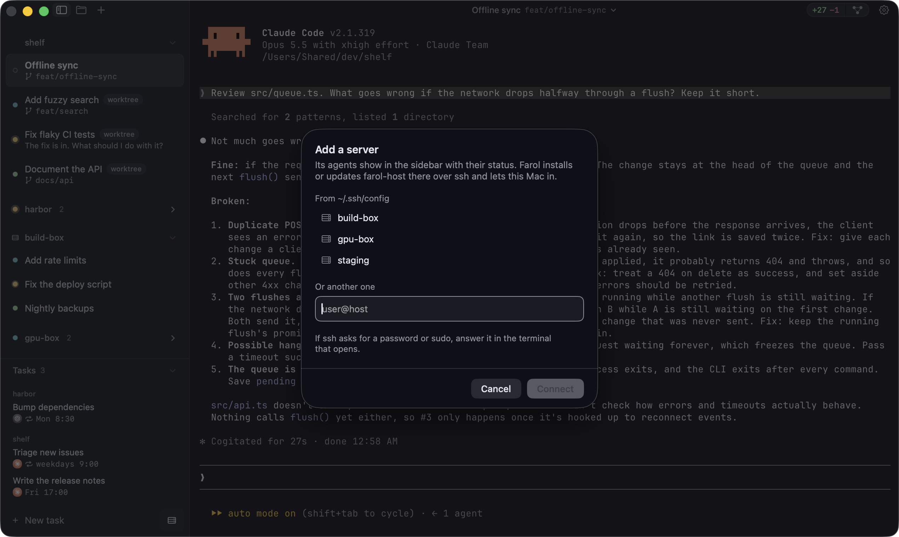
In the sidebar
The server's agents show under its name, with the same dots and notifications as your own.
- Click an agent to open its tmux window over ssh.
- The + on the server's name opens a new tmux session there, and the ✕ on a row ends one.
- A pane you split off opens on the server too.
- Right-click the name to rename or remove the server.
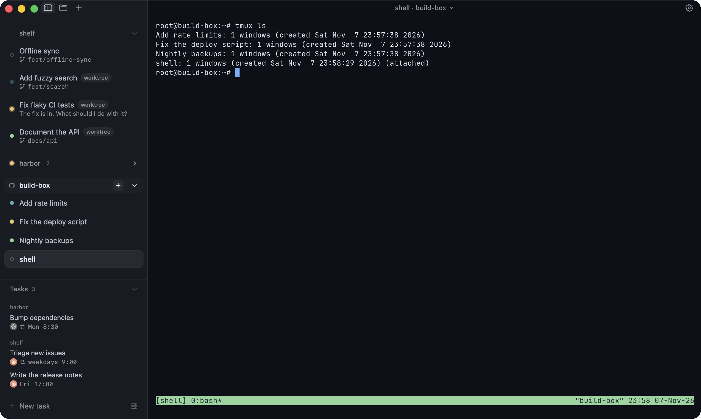
On your phone
Right-click the server's name and choose Pair a Phone…, or open Settings → Remote → Servers, then scan the code from the app. The Mac and the phone are let in separately, so the phone keeps seeing the server with the Mac off.
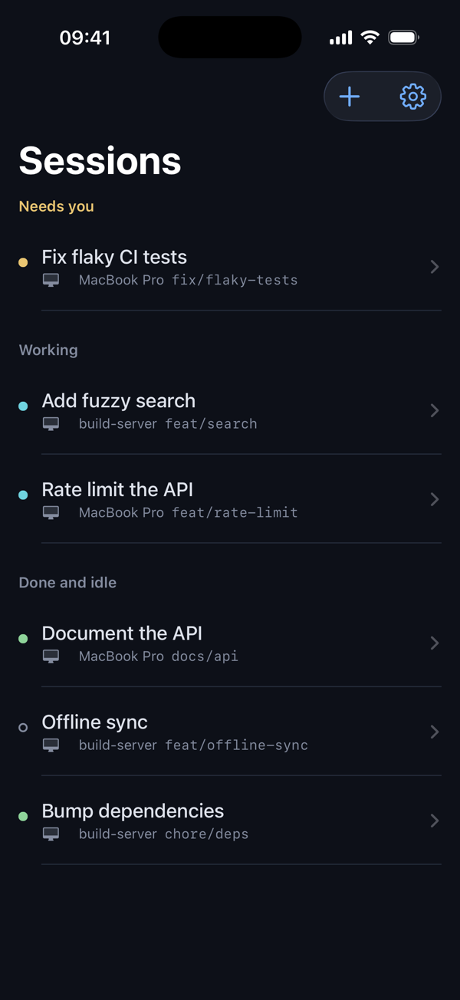
Set one up by hand
Without a Mac in the loop, install farol-host on the server and scan the code it shows from the app:
curl -fsSL https://farol.sh/host.sh | sh
farol-host setupSetup connects Claude Code and Codex and keeps farol-host running. Start agents in tmux, like tmux new -s api then claude. A server set up this way can still be added from the Mac later.
Configuration
Use Settings or edit ~/.config/farol/config. Both update the same file, and changes apply to every session when you save.
theme = Farol Dark
font-family = JetBrains Mono
font-size = 14The file uses Ghostty's configuration format, so options from the Ghostty documentation work in Farol.
To use one theme in Light Mode and another in Dark Mode, turn on Match system appearance in Settings → Appearance, or name one for each:
theme = light:Farol Dawn,dark:Farol DuskThemes
Farol has eight themes of its own: six dark, plus Dawn and Light for light mode. Every Ghostty theme works too. Pick one to see it, with the line that sets it:
theme = Farol Beam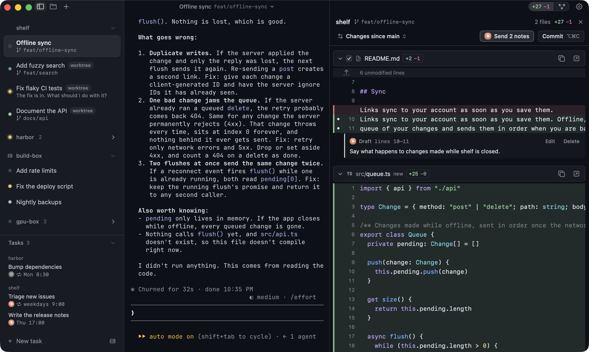
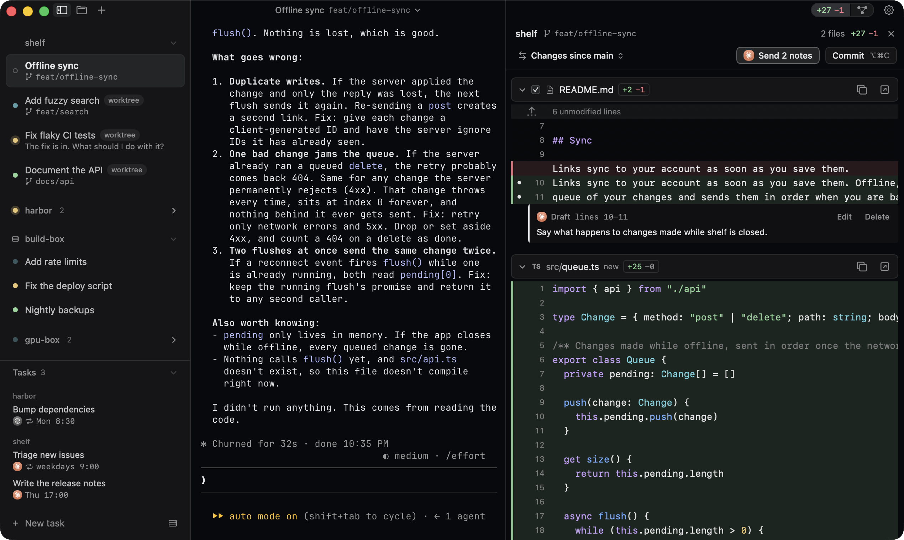
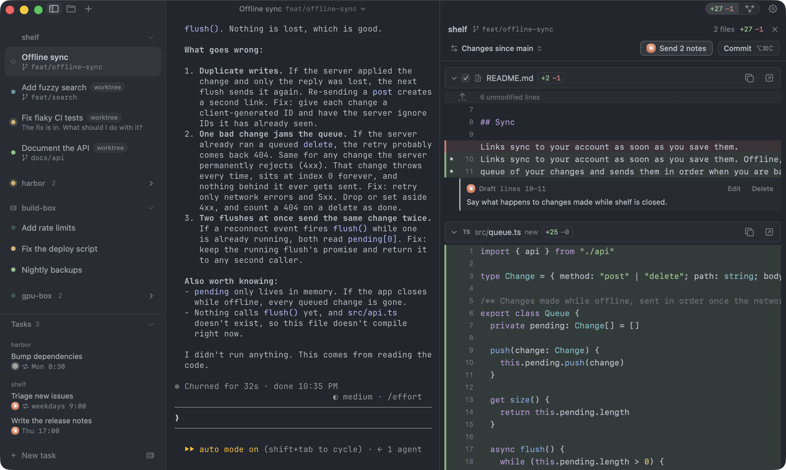
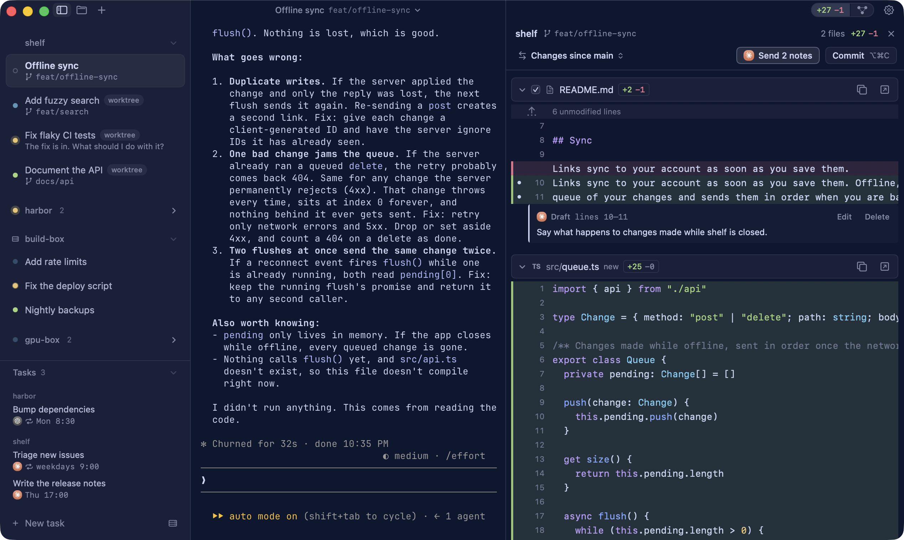
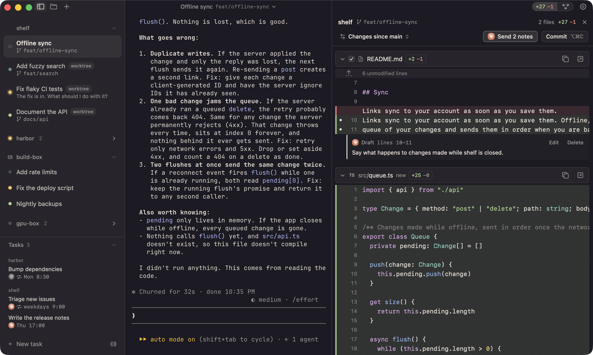
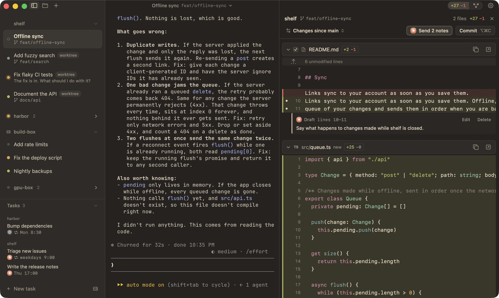
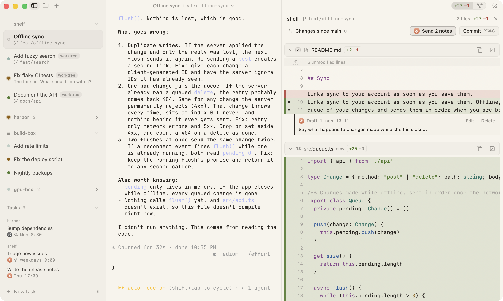
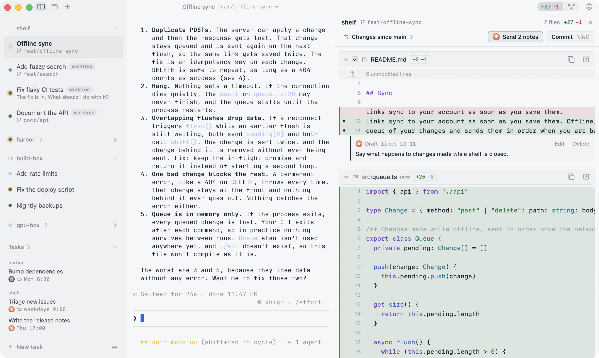
Custom themes
Put Ghostty theme files in ~/.config/farol/themes. They appear in Settings → Appearance → Theme after Farol's built-in themes. The Themes folder button opens the right location.
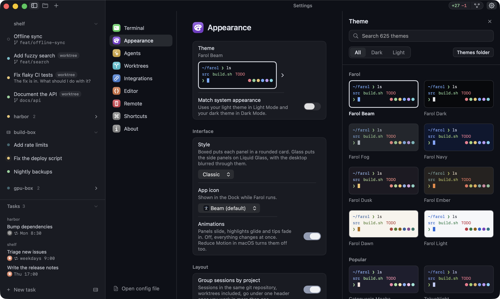
Shortcuts
| Action | Keys |
|---|---|
| New task | ⇧⌘N |
| New session | ⌘T or ⌘N |
| New worktree session | ⇧⌘T |
| Search sessions | ⌘P |
| Split right or down | ⌘D or ⇧⌘D |
| Toggle sidebar | ⌘B |
| Toggle files | ⇧⌘E |
| Review changes | ⌥⌘R |
| Commit | ⌥⌘C |
| Push | ⌥⌘P |
| Git graph | ⌥⌘G |
| Resolve conflicts | ⌥⌘M |
| Next or previous change to decide | ⌥↓ or ⌥↑ |
| Mark the file resolved | ⌘S |
| Accept yours or the incoming side, for the whole file | ⌃⌘← or ⌃⌘→ |
| Continue once every file is resolved | ⌘↩ |
| Find in the focused pane | ⌘F |
| Settings | ⌘, |
Ghostty's other default shortcuts, such as ⌘K to clear and ⌘+ to zoom, also work in Farol.
Troubleshooting
An agent stays idle
Open Settings → Agents and check its connection. For Codex, keep terminal titles enabled. After connecting hooks, restart sessions that were already open.
A configuration change does not appear
Save ~/.config/farol/config, or press ⇧⌘, to reload the configuration manually.
Something else is wrong
Check the latest release, then open an issue with your macOS version and the steps that reproduce the problem.